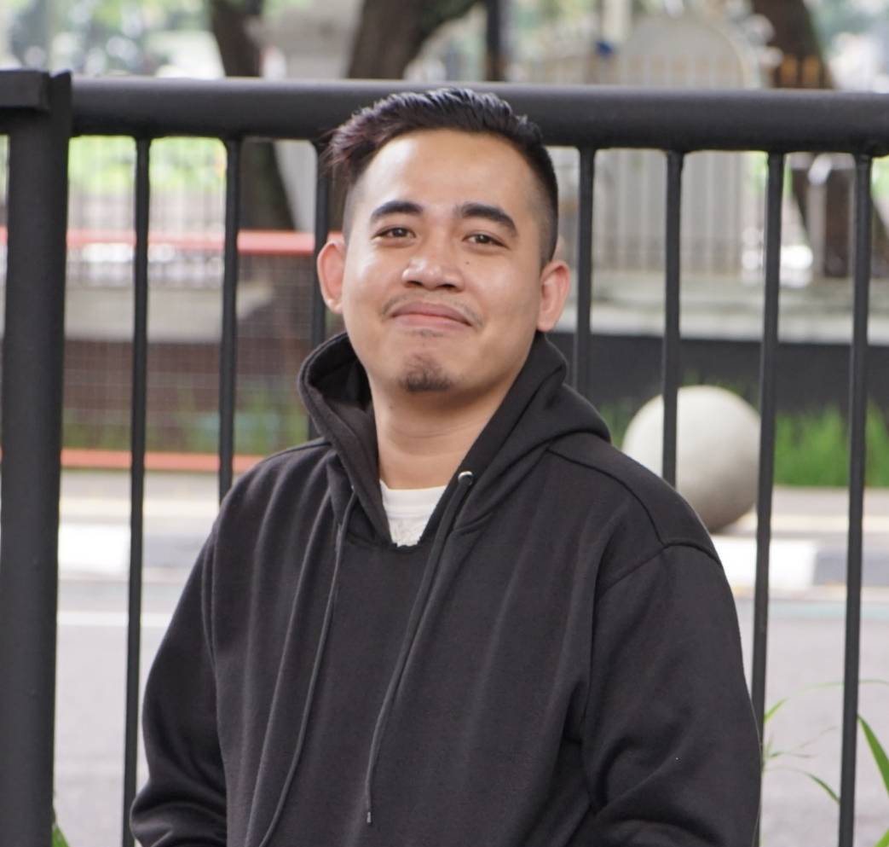

Nama : Tanvin
Tanggal Lahir : 28 April 1995
Alamat : Pem Heritage 2 no.6
Jenis Kelamin : Laki-Laki
Kewarga Negaraan : Indonesia
|
|
|
Nama saya Tanvin, saya berumur 29th memancing adalah hobi saya karna memancing dapat membuat saya lebih tenang dan dapat berfikir lebih jernih.
Awal mula saya suka memancing yaitu sejak masa kecil saya yang tinggal didesa jadi hiburan anak anak desa salah satunnya adalah memancing karena dulu memancing tidak perlu mengeluarkan biaya yang banyak hanya bermodal tali senar dan mata kail kita sudah dapat memancing ikan .
kebetulan saya bersekolah di SMK Kelautan disana saya praktik kerja lapangan ( PKL ) di kapal ikan, sesuai hobi kan hehe. semenjak itu saya lebih mendalami hobi memancing saya, Saya molai membeli perlengkapan menancing dari hasil menabung awal mulanya terasa berat karna kita harus menyisihkan uang jajan untuk membelinnya. Tapi hobilah yang mengalahkan semuannya, sedikit demi sedikit saya molai menabung dan sedikit demi sedikit juga saya melaengkapi peralatan memancing saya. Tetapi saya lebih menyukai memancing di alam liar karena saya merasa lebih tertantang jika saya memancing di alam liar, entah itu medan yang kita tempuh, hewan liar yang kita temui di perjalanan, atau ikan target yang kita inginkan. semua tidak dapat kita pastikan, oleh sebab itu saya lebih menyukai memancing di alam liar. selain itu saya juga suka memancing di malam hari dengan susana malam hari memancing lebih terasa matab, karena kehidupan malam dialam liar itu sangatlah asik, banyak hal yang akan kita temui di saat malam hari ketika kita memancing.
Jadi sediakanlah maktu sekali dalam seumur hidup untuk merasakan keseruan memancing.
|